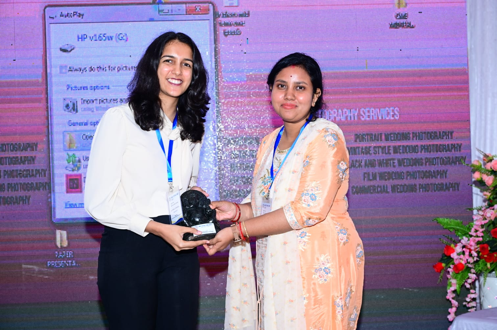

About Dr. Rucha Chhajed
Dr. Rucha Chhajed is a highly qualified and dedicated psychiatrist committed to providing comprehensive and empathetic mental health care. She holds an MBBS degree and a Doctor of Medicine (MD) in Psychiatry, earning a Gold Medal for her outstanding academic performance during her MD at **Shri Ramachandra Bhanja Medical College and Hospital, Cuttack**.
Her foundational medical training was completed at **N.K.P. Salve Institute of Medical Sciences & Research Center, Nagpur**, where she developed a strong understanding of medical principles and patient care.
With a passion for helping individuals achieve mental well-being, Dr. Rucha offers evidence-based online consultations for a range of psychiatric conditions. Her approach is patient-centered, focusing on understanding each individual's unique needs and developing tailored treatment plans.
Dr. Rucha is committed to providing a safe, confidential, and supportive online environment for her patients. She believes in the power of holistic care, integrating medication management and therapeutic approaches to promote lasting recovery and improved quality of life.
Shri Ramachandra Bhanja Medical College and Hospital, Cuttack